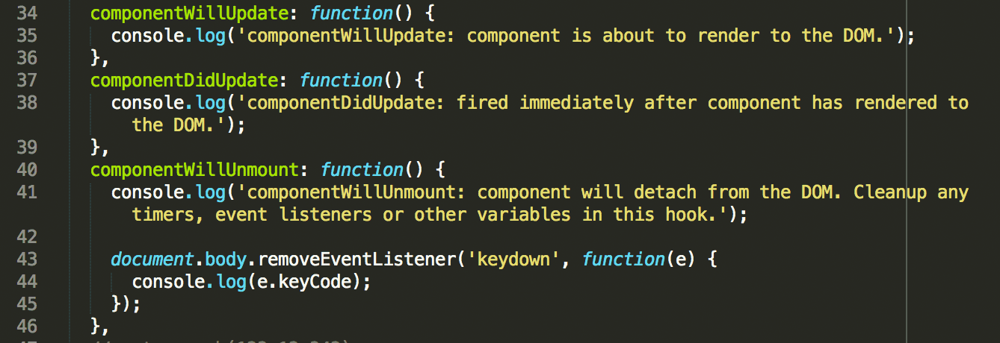

React
A JAVASCRIPT LIBRARY FOR BUILDING USER INTERFACES
What is React?
- A javascript library for rendering highly performant UIs in the browser
- Claims to be the View in MVC
- React was built by the instagram team, shared with facebook and open sourced in May 2013
- Derided when first open sourced, but is now considered a valuable rethink of SPA architecture
SPA - single page application
- All HTML, CSS and Javscript is loaded once
- Updates to the UI are handled by javascript
- Fetching new data is handled by AJAX or WebSockets, NOT by
reloading the entire page like traditional client / server web applications
- Provides a faster feedback loop for the user and better User Experience
- Popular SPA frameworks include Backbone, Ember, Angular and countless others
DOM is slow
Accessing the DOM, adding and removing HTML elements, and changing HTML element styles and properties is very slow.
React was built to address this one major bottleneck in browser performance.
DOM is slow
DOM is slow - Reflow
Reflow happens when the browser engine builds the layout geometry of HTML elements based on style properties. Reflow occurs:
- on page load
- on browser window resize
- when layout information retrieved
- when layout styles are applied
- when DOM nodes are added or removed
Reflow cascades down the DOM tree, so changes to the body element cause the browser to recalculate the geometry for every element on the page
DOM is slow - Paint
Paint occurs when the browser draws calculated styles to the screen.
- elements are painted to the screen
- images are decoded and resized if they do not match their element width / height
- CSS styles are calculated and painted to screen
- box-shadow, gradients and opacity are expensive styles to paint
- the browser window is painted frame by frame during scrolling
React - Virtual DOM
- React minimizes Reflows and Paints
- React creates a "Virtual DOM" representation of the actual DOM in javascript
- When a change is made, a diff is made between the actual DOM and the virtual DOM to find all changes to the HTML elements and properties
- This diff between the virtual DOM is then reconclied with the actual DOM and the minimum amount of updates are made to the actual DOM, all in one pass
React - Actual DOM
React - DIFF
UI updates are made. React creates a DIFF between actual DOM and Virtual DOM
React - Updated DOM
DIFF applied to Actual DOM in one pass, minimizing Reflow and Paint.
DOM is slow - React is fast
Ryan Florence compares Ember, Angular and React performance.
React Code Example 1
HTML
JSX
JSX
- JSX is a representation of HTML in javascript
- Simplifies component design
- Ubiquitous - difficult to find examples not using JSX
- Requires a build step. Options:
- jsx command line tool
- gulp watch task using browserify
- webpack with Babel for ES6
React Code Example 2
Composability
React Code Example 3
this.state && this.props
React Code Example 4
Private Functions
React Code Example 5
Lifecycle methods
- You can hook into various points of the React render cycle with lifecycle hooks.
- componentWillMount
- componentDidMount
React Code Example 6
Lifecycle methods
- You can hook into various points of the React render cycle with lifecycle hooks.
- componentWillReceiveProps
- shouldComponentUpdate
React Code Example 7
Lifecycle methods
- componentWillUpdate
- componentDidUpdate
- componentWillUnmount

React Code Example 8
CSS
- className
- backgroundColor
Flux
- one way data flow
- handling data updates

Comcast App
- app.jsx
- componentDidMount
- flux
- browserify
- shouldComponentUpdate example in product row
React Native
Native mobile app performance, written in javascript
- share code between web pages and native apps
- use css flexbox for native layout
- early days - iOS support only, Android coming in about a month
Future of React
- Docs will use ES6 syntax, Babel transpilation encouraged
- Immutable data structures
- React Native for Android
- Flux library will mature
- Server side rendering
Resources
Discussion